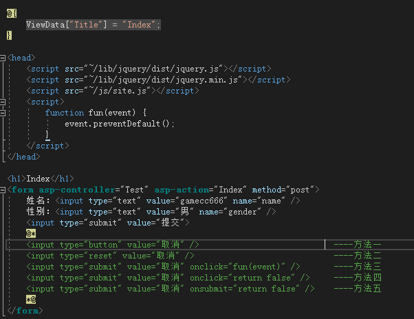

条件: .netcore web mvc
在 View 视图界面，新建一个表单按钮来执行我们所需要的任务---数据的提交。但是通常我们有些情况不需要提交表单，例如：一个简单的注册界面，我们填完信息的时候需要两个按钮，一个是确定按钮，一个是取消按钮，但是如果简单地这样处理的话就会出现问题，当你点击取消按钮的时候表单也被提交到后台去了，但是在这里我们不希望它被提交到后台。所以此时需要我们进行一些简单的操作来处理表单的提交问题；
闲话少说直接上代码：
控制器代码：
视图代码：

完整项目代码请参考：https://github.com/gamecc666/FormSubmissAndPrevent
版权声明：本文为博主原创文章，如需转载，请标明出处。